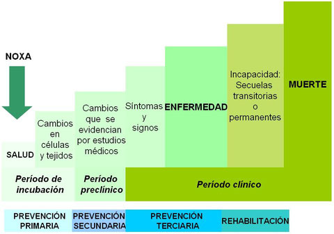
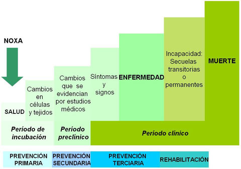

Salud
¿Qué es la Salud? (Según la OMS)
La Organización Mundial de la Salud define el concepto de salud como "el completo bienestar físico, mental y social de los individuos." Este se relaciona directamente con el ambiente en el que se encuentre y de los recursos que dispongan. Anteriormente definido de manera incorrecta, como la ausencia de enfermedad.
NOXA
Se denomina noxa a todo factor que altera el equilibrio entre las partes psíquicas, físicas y sociales de un organismo, produciéndose así una patología. Estas pueden identificarse según su origen en biológicas, químicas, físicas, sociales y psicológicas.
¿Qué es la OMS?
Es una organización especializada de las Naciones Unidas fundado en 1948, cuyo objetivo es alcanzar a nivel mundial, es decir, para todos los habitantes, el máximo grado de salud posible, ya que este es un derecho. Para ello, recuren a distintas acciones.
Las Acciones de Salud:
Las acciones de salud son las medidas que ayudan a evitar la propagación de las enfermedades o bien brinda la educación necesaria al respecto para evitarlas. Estas están dirigidas al individuo en lo que acude a la atención médica de las enfermedades, y al ambiente; en todo lo que abarca al saneamiento. El estado es el que debería está encargado de organizar aquellas acciones. Existen distintas etapas de estas:
 

- Promoción: Acciones cuyo propósito es el de reducir la propagación de afecciones por medio de la educación.
- Prevención primaria: Incluye a las acciones sanitarias que deberían organizar y realizar los gobiernos junto a la comunidad para evitar los contagios. Ejemplo: Mantener en óptimas condiciones los ambientes públicos.
- Prevención secundaria: Es el desarrollo de programas que aseguran un diagnóstico temprano de las enfermedades con el objetivo de disminuir la tasa de mortalidad. Ejemplo: Consultas médicas diarias.
- Prevención terciaria: Es el tratamiento con el objetivo de curar al afectado por determinada enfermedad. Esta cuenta con tres etapas:
- Recuperación: Se manisfista la enfermedad y se acude a la consulta médica.
- Rehabilitación: Restituye las capacidades físicas, sociales y/o psiquiátricas del paciente, recuperando su autonomía.
- Reinserción social: Se produce con la participación de la comunidad, es cuando se busca reintegrar al individuo a la sociedad, mediante el trabajo, la capacitación, la educación, la salud y el deporte, etc.
Programas de Salud aplicados en Argentina:
El sistema de salud de Argentina está compuesto por tres sectores poco integrados entre sí y fragmentados también en su interior: el sector público, el sector de seguro social obligatorio (Obras Sociales) y el sector privado.
- Implementar la estrategia de Atención Primaria de la Salud, integrando la asistencia, la prevención de enfermedades, la promoción de la salud y la rehabilitación en las áreas provinciales y las organizaciones sanitarias con competencia en la problemática, sobre la base del respeto a sus peculiaridades culturales.
- Desarrollar acciones de promoción de la salud y prevención de enfermedades con los distintos programas existentes a nivel nacional inscriptos en la estrategia de Atención Primaria de la Salud.
- Reforzar la atención sanitaria provincial y municipal del primer nivel de atención, a través de la prestación complementaria unidades sanitarias móviles con el fin de mejorar la accesibilidad de las poblaciones más vulnerables
- Fortalecer la estrategia de Atención Primaria de la Salud en los sistemas locales de salud -municipios, comunidades, ciudades- a través de la participación de equipos comunitarios, agentes comunitarios y toda otra actividad que implemente el Ministerio.
- Gestionar la asistencia técnica a los municipios saludables miembros de la Red Argentina de Municipios y Comunidades Saludables.
- Desarrollar políticas y programas de salud familiar y comunitaria.
- Gestionar la formación y capacitación de recursos humanos en salud familiar y comunitaria, con abordaje territorial.
- En el ámbito de la Dirección Nacional de Salud Familiar y Comunitaria se sitúan:
- La Dirección de Atención Primaria de la Salud en la cual, entre sus responsabilidades se encuentra la coordinación y programación de estrategias para garantizar la accesibilidad a los sistemas sanitarios públicos sobre la base de la atención primaria y redes de servicio en todo el país.
Calidad de vida
Este concepto se centra en el nivel de desarrollo con el que cuentan las personas en su vida. Hace alusión a varios niveles de generalización pasando por sociedad, comunidad, hasta el aspecto físico y mental; por lo tanto, el significado de calidad de vida es complejo, ya que cuenta con definiciones que van desde la psicología y sociología a las ciencias políticas, medicina, estudios del desarrollo, etc. Las condiciones de vida de las personas y de las sociedades en su conjunto varían con el tiempo, ya que por ejemplo las políticas sociales, dentro de un estado benefactor, pueden mejorar las condiciones de vida de la población: planes de empleo, seguros de desempleo, comedores comunitarios, plan de viviendas, etc. Hay muchos tipos de condiciones de vida determinantes:
- Condiciones económicas
- Condiciones sociales
- Condiciones políticas
- Condiciones de salud
- Condiciones naturales
La calidad de vida se evalúa analizando cinco áreas diferentes: bienestar físico (con conceptos como la salud, seguridad física), bienestar material (haciendo alusión a ingresos, pertenencias, vivienda, transporte, etc.), bienestar social (relaciones personales, amistades, familia, comunidad), desarrollo (productividad, contribución, educación) y bienestar emocional (autoestima, mentalidad, inteligencia emocional, religión, espiritualidad).
Un indicador comúnmente usado para medir la calidad de vida es el Índice de Desarrollo Humano (IDH), establecido por las Naciones Unidas para medir el grado de desarrollo de los países a través del Programa de las Naciones Unidas para el Desarrollo (PNUD), cuyo cálculo se realiza a partir de las siguientes variables: La esperanza de vida, educación y el PBI

{kind=link}
{kind=link}
{kind=link}
{kind=link}
{kind=link}
{kind=link}
{kind=link}
{kind=link}
{kind=link}